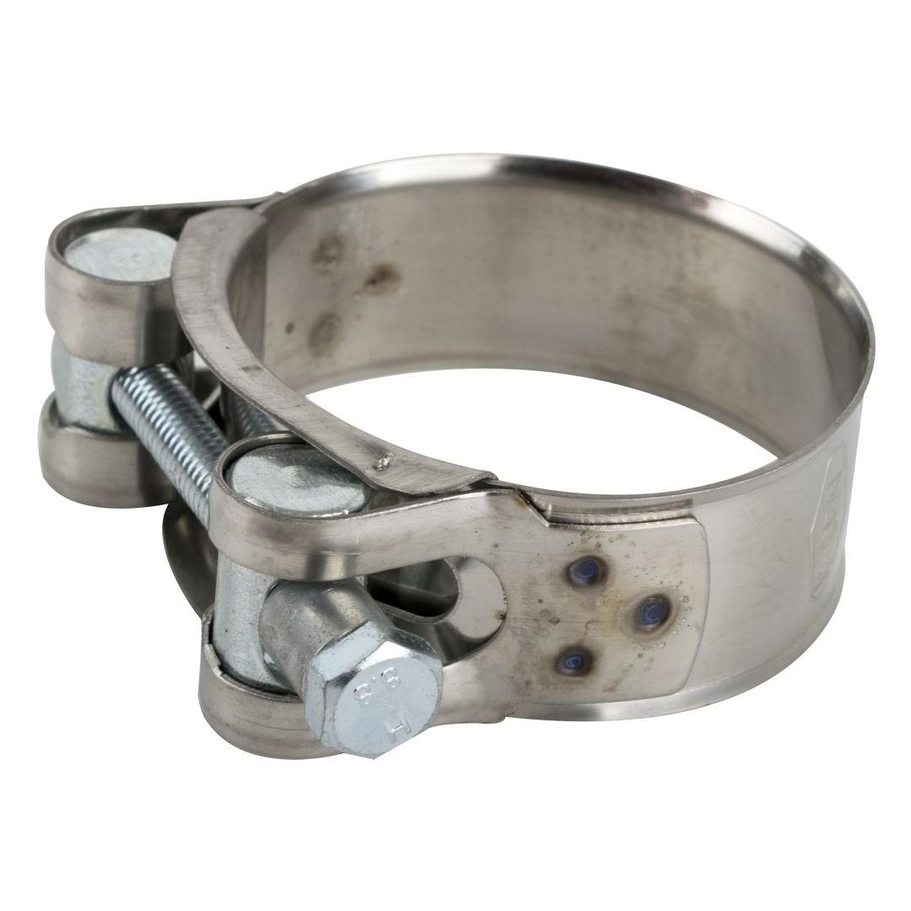

HCHD44-47

Size range: 44mm to 47mm
The Heavy Duty Hose Clamp is a robust and reliable fastening solution designed for demanding applications. Crafted from durable materials, this heavy-duty hose clamp provides exceptional gripping power for hoses with an outer diameter ranging from 44mm to 47mm. Its superior construction ensures a secure and leak-proof seal, even under high pressure or vibration, making it ideal for automotive, industrial, marine, and agricultural uses where a strong, long-lasting connection is paramount. Supplied in bulk, it offers an economical choice for professionals requiring a consistent supply of high-performance hose clamps.
Application: